전기산업기사 (2004-03-07 기출문제)
1과목: 전기자기학
1. 대전도체의 성질중 옳지 않은 것은?
- 도체표면의 전하밀도를 σ[C/m2]이라 하면 표면상의 전계는
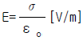
이다. - 도체 표면상의 전계는 면에 대해서 수평이다.
- 도체 내부의 전계는 0 이다.
- 도체는 등전위이고, 그의 표면은 등전위면이다.
(정답률: 69%)

2. 극판면적 10cm2, 간격 1mm 의 평행판 콘덴서에 비유전률 3인 유전체를 채웠을 때 전압 100V를 가하면 저축되는 에너지는 몇 Ｊ인가?
- 1.33×10-7
- 2.66×10-7
- 3.5×10-8
- 6.9×10-8
(정답률: 68%)
3. 그림과 같이 면적 S[m2], 간격 d[m]인 극판간에 유전률 ε, 저항률 ρ인 매질을 채웠을 때 극판간의 정전용량 C 와 저항 R 의 관계는? (단, 전극판의 저항률은 매우 작은 것으로 한다.)
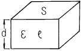
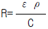
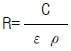
- R=ερC
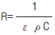
(정답률: 72%)
4. 비유전률 9 인 유전체 중에 1cm의 거리를 두고 1μC과 2μC의 두 점전하가 있을 때 서로 작용하는 힘은 몇 N 인가?
- 18
- 20
- 180
- 200
(정답률: 62%)
5. 비유전률 4, 비투자율 1인 공간에서 전자파의 전파속도는 몇 m/s 인가?
- 0.5×108
- 1.0×108
- 1.5×108
- 2.0×108
(정답률: 64%)
6. 그림과 같이 구형단면의 심환을 갖는 무단솔레노이드가 있다. 심환의 내외 반지름은 각각 R1, R2[m]이고, 그 축방향의 두께는 ℓ [m], 권수는 N 회일 때, 솔레노이드의 인덕턴스는 몇 H 인가?
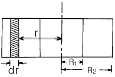
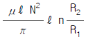
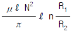
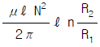
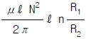
(정답률: 42%)
7. 반지름 5cm, 권회수 100 의 원형코일에 10A의 전류를 통할 때 코일 중심의 자계의 크기는 몇 AT/m 인가?
- 50
- 500
- 1000
- 10000
(정답률: 58%)
8. 벡터에 대한 계산식이 옳지 않은 것은?
- iㆍi =jㆍj =kㆍk =0
- iㆍj =jㆍk =kㆍi =0
- AㆍB =ABcosθ
- i×i = j×j = k×k =0
(정답률: 54%)
9. 자기인덕턴스 L1[H], L2[H]이고, 상호인덕턴스가 M[H]인 두 코일을 직렬로 연결하였을 경우 합성인덕턴스는?
- L1+L2 ± 2M
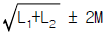
- L1+L2 ± 2√M
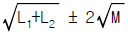
(정답률: 78%)
10. 푸아송의 방정식
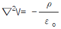
은 어떤식에서 유도한 것인가?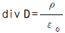
- biv D = -ρ
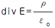
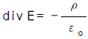
(정답률: 48%)
11. 전기력선의 성질로 옳지 않은 것은?
- 전기력선은 정전하에서 시작하여 부전하에서 그친다.
- 전기력선은 도체 내부에만 존재한다.
- 전기력선은 전위가 높은 점에서 낮은 점으로 향한다.
- 단위전하에서는
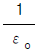
개의 전기력선이 출입한다.
(정답률: 77%)
12. 감자율이 0 인 것은?
- 가늘고 긴 막대 자성체
- 가늘고 짧은 막대 자성체
- 굵고 짧은 막대 자성체
- 환상 철심
(정답률: 73%)
13. 구리 중에는 1cm3에 8.5×1022 개의 자유전자가 있다. 단면적 2mm2의 구리선에 10A의 전류가 흐를 때의 자유전자의 평균속도는 약 몇 cm/s 인가?
- 0.037
- 0.37
- 3.7
- 37
(정답률: 38%)
14. 기자력의 단위는?
- V
- Wb
- AT
- N
(정답률: 71%)
15. 자속밀도 0.5Wb/m2의 균일한 자계내에 길이 1m의 도선을 자계와 수직방향으로 운동시킬 때 도선에 50V의 기전력이 유기된다면 이 도선의 속도는 몇 m/s 인가?
- 10
- 25
- 50
- 100
(정답률: 29%)
16. 전도전자나 구속전자의 이동에 의하지 않는 전류는?
- 대류전류
- 전도전류
- 변위전류
- 분극전류
(정답률: 66%)
17. 질량 m[㎏]인 작은 물체가 전하 Q[C]을 가지고 중력 방향과 직각인 무한도체평면 아래쪽 d[m]의 거리에 놓여있다. 정전력이 중력과 같게 되는데 필요한 Q[C]의 크기는?
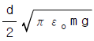
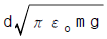
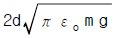
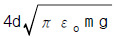
(정답률: 51%)
18. 진공 중에 같은 전기량 +1C의 대전체 두개가 약 몇 m 떨어져 있을 때 각 대전체에 작용하는 척력이 1N인가?
- 3×10-3
- 3×103
- 9.5×10-4
- 9.5×104
(정답률: 44%)
19. 비투자율 μs, 자속밀도 B[Wb/m2]의 자계 중에 있는 m[Wb]의 자극이 받는 힘은 몇 N 인가?
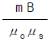
- m B
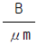
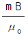
(정답률: 82%)
20. 길이 ℓ [m]의 도체로 원형코일을 만들어 일정 전류를 흘릴 때 M회 감았을 때의 중심 자계는 N회 감았을 때의 중심 자계의 몇 배인가?
- M/N
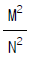
- N/M
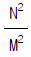
(정답률: 54%)
2과목: 전력공학
21. 취수구에 제수문을 설치하는 목적은?
- 낙차를 높인다.
- 홍수위를 낮춘다.
- 유량을 조절한다.
- 모래를 배제한다.
(정답률: 79%)
22. 송전계통의 절연협조에 있어서 절연 레벨을 가장 낮게 하고 있는 기기는?
- 피뢰기
- 단로기
- 변압기
- 차단기
(정답률: 66%)
23. 유입차단기에 대한 설명으로 옳지 않은 것은?
- 기름이 분해하여 발생되는 가스의 주성분은 수소 가스이다.
- 붓싱 변류기를 사용할 수 없다.
- 기름이 분해하여 발생된 가스는 냉각작용을 한다.
- 보통 상태의 공기 중에서보다 소호능력이 크다.
(정답률: 48%)
24. 전력용콘덴서에서 방전코일의 역할은?
- 잔류전하의 방전
- 고조파의 억제
- 역률의 개선
- 콘덴서의 수명 연장
(정답률: 65%)
25. 전력원선도에서 알 수 없는 것은?
- 선로 손실
- 송전선의 역률
- 코로나 손실
- 송수전 전력
(정답률: 56%)
26. 연가해도 효과가 없는 것은?
- 선로정수의 평형
- 유도뢰의 방지
- 작용정전용량 감소
- 각 상의 임피던스 평형
(정답률: 64%)
27. 송전선로의 4단자 정수를 A , B , C , D 라 하면 다음 중 옳은 것은?
- A C - B D =1
- A B - C D =1
- A B C D =1
- A D - B C =1
(정답률: 75%)
28. 250㎜ 현수애자 10개를 직렬로 접속한 애자연의 건조섬락 전압이 590kV이고, 연효율(string efficiency)이 0.74이다. 현수애자 한 개의 건조섬락전압은 약 몇 kV 인가?
- 80
- 90
- 100
- 120
(정답률: 44%)
29. 3상 변압기의 %임피던스는? (단, 임피던스는 Z[Ω], 선간전압은 V[kV], 변압기의 용량은 P[kW]이다.)
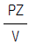
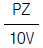
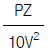
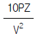
(정답률: 68%)
30. 그림과 같이 6300/210V인 단상 변압기 3대를 △-△결선 하여 수전단 전압이 6000V인 배전선로에 연결된 변압기 한 대가 가극성이었다고 한다. 전압계 ⓥ에는 몇 V의 전압이 유기되는가?
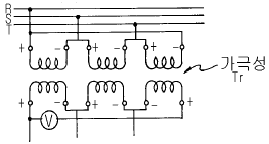
- 0
- 100
- 200
- 400
(정답률: 28%)
31. 터빈발전기에서 수소냉각방식을 공기냉각방식과 비교한 것 중 수소냉각방식의 특징이 아닌 것은?
- 동일 기계에서 출력을 증가할 수 있다.
- 풍손이 적다.
- 권선의 수명이 길어진다.
- 코로나 발생이 심하다.
(정답률: 62%)
32. 전력계통의 안정도 향상대책으로 옳은 것은?
- 송전계통의 전달 리액턴스를 증가시킨다.
- 재폐로 방식을 채택한다.
- 전원측 원동기용 조속기의 부동시간을 크게 한다.
- 고장을 줄이기 위하여 각 계통을 분리시킨다.
(정답률: 57%)
33. 복도체 선로에서 소도체의 지름이 8mm이고, 소도체사이의 간격이 40cm일 때 등가 반지름은 몇 cm 인가?
- 2.8
- 3.6
- 4.0
- 5.7
(정답률: 39%)
34. 그림과 같이 수전단 전압 3.3kV, 역률 0.85(뒤짐)인 부하 300kW에 공급하는 선로가 있다. 이 때 송전단 전압은 약몇 V 인가?
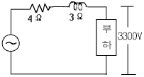
- 2930
- 3230
- 3530
- 3830
(정답률: 34%)
35. 동작전류가 커질수록 동작시간이 짧게 되는 계전기는?
- 반한시계전기
- 정한시계전기
- 순한시계전기
- Notting 한시계전기
(정답률: 73%)
36. 수전단 전압이 송전단 전압보다 높아지는 현상을 무엇이라 하는가?
- 페란티 효과
- 표피효과
- 근접효과
- 도플러 효과
(정답률: 77%)
37. 가공지선에 대한 설명 중 옳지 않은 것은?
- 직격뢰에 대해서는 특히 유효하며 탑 상부에 시설 하므로 뇌는 주로 가공지선에 내습한다.
- 가공지선 때문에 송전선로의 대지용량이 감소하므로 대지와의 사이에 방전할 때 유도전압이 특히 커서 차폐효과가 좋다.
- 송전선 지락시 지락전류의 일부가 가공지선에 흘러 차폐작용을 하므로 전자유도장해를 적게 할 수도 있다.
- 가공지선은 아연도 철선, ACSR 등을 사용하며 보통 300m, 때로는 50m마다 접지하기도 한다.
(정답률: 31%)
38. 연간 최대수용전력이 70kW, 75kW, 85kW, 100kW인 4개의 수용가를 합성한 연간 최대수용전력이 250kW이다. 이 수용가의 부등률은 얼마인가?
- 1.11
- 1.32
- 1.38
- 1.43
(정답률: 60%)
39. 원자로의 보이드(void)계수란?
- 연료의 온도가 1도 변화할 때의 반응도 변화
- 노심내의 증기량이 1% 변화할 때의 반응도 변화
- 냉각재의 온도가 1도 변화할 때의 반응도 변화
- 연료 중의 독물질의 독작용을 나타내는 값
(정답률: 37%)
40. 송전계통에서 이상전압의 방지대책이 아닌 것은?
- 철탑 접지저항의 저감
- 가공 송전선로의 피뢰용으로서의 가공지선에 의한 뇌차폐
- 기기 보호용으로서의 피뢰기 설치
- 복도체 방식 채택
(정답률: 59%)
3과목: 전기기기
41. 다음중 정전압형 발전기가 아닌것은?
- Rosenberg Generator
- Third Brush Generator
- Bergmann Generator
- Rototrol
(정답률: 51%)
42. 발전기의 단락비나 동기 임피던스를 산출하는데 필요한 시험은?
- 단상 단락시험과 3상 단락시험
- 무부하 포화시험과 3상 단락시험
- 정상,영상,리액턴스의 측정시험
- 돌발 단락시험과 부하시험
(정답률: 75%)
43. 2개의 SCR로 단상전파정류를 하여 √2×100[V]의 직류전압을 얻는데 필요한 1차측 교류 전압[V]은?
- 약 111
- 약 141
- 약 157
- 약 314
(정답률: 43%)
44. 직류발전기의 병렬운전 조건 중 잘못된 것은?
- 단자전압이 같을 것
- 외부특성이 같을 것
- 극성을 같게 할 것
- 유도기전력이 같을 것
(정답률: 39%)
45. 정격 전압에서 전 부하로 운전할때 50[A]의 부하 전류가 흐르는 직류 직권전동기가 있다. 지금 이 전동기의 부하 토크만이 1/2로 감소하면 그 부하전류는? (단.자기포화는 무시)
- 25[A]
- 35[A]
- 45[A]
- 50[A]
(정답률: 49%)
46. 60[Hz], 4[극], 정격속도 1720[rpm]의 권선형 3상 유도 전동기가 있다. 전부하 운전중에 2차 회로의 저항을 4배로 하면 속도[rpm]는?
- 약 962
- 약 1215
- 약 1483
- 약 1656
(정답률: 44%)
47. 다음중 변압기의 극성시험법이 아닌 것은?
- 직류전압계법
- 교류전압계법
- 표준변압기법
- 스코트법
(정답률: 54%)
48. 동기전동기에 관한 설명에서 잘못된 것은?
- 기동권선이 필요하다.
- 난조가 발생하기 쉽다.
- 여자기가 필요하다.
- 역률을 조정할 수 없다.
(정답률: 69%)
49. 전압비가 무부하에서는 15:1, 정격부하에서는 15.5:1인 변압기의 전압변동율 [%]은?
- 2.2
- 2.6
- 3.3
- 3.5
(정답률: 55%)
50. 변압기의 철손이 Pi, 전부하동손이 Pc 일때 정격출력의 1/m 의 부하를 걸었을때 전손실은 어떻게 되는가?
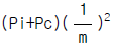
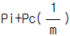
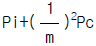
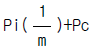
(정답률: 51%)
51. 220[V], 3상, 4극, 60[Hz]인 3상 유도 전동기가 정격 전압 주파수에서 최대 회전력을 내는 슬립은 18[%]이다. 지금 200[V], 50[Hz]로 사용할 때의 최대 회전력 발생 슬립은 몇 [%] 인가?
- 17.7
- 19.7
- 20.7
- 21.7
(정답률: 21%)
52. 직류 전동기의 속도제어 방식중 직병렬 제어법을 사용할 수 있는 전동기는?
- 직류 타여자 전동기
- 직류 분권 전동기
- 직류 직권 전동기
- 직류 복권 전동기
(정답률: 33%)
53. 동기발전기에서 제 5고조파를 제거하기 위해서는 (β =코일피치/극피치)가 얼마되는 단절권으로 해야 하는 가?
- 0.9
- 0.8
- 0.7
- 0.6
(정답률: 38%)
54. 2방향성 3단자 사이리스터는?
- SCR
- SSS
- SCS
- TRIAC
(정답률: 60%)
55. 200[V], 7.5[KW], 6극, 3상 유도전동기가 있다. 정격전압으로 기동할때는 기동전류는 정격전류의 615[%], 기동토크는 전부하 토오크의 225[%]이다. 지금 기동토크를 전부하 토크의 1.5배로 하려면 기동전압은?
- 약 163[V]
- 약 182[V]
- 약 193[V]
- 약 202[V]
(정답률: 21%)
56. 3상 유도전동기의 전원주파수를 변화하여 속도를 제어하는 경우 전동기의 출력 P와 주파수 f 와의 관계는?
- P ∝ f
- P ∝ 1/f
- P ∝ f2
- P는 f에 무관
(정답률: 59%)
57. 교류를 직류로 변환하는 전기기기가 아닌 것은?
- 전동발전기
- 회전변류기
- 단극발전기
- 수은정류기
(정답률: 35%)
58. 누설 변압기에 필요한 특성은 무엇인가?
- 정전압특성
- 고저항특성
- 고임피던스특성
- 수하특성
(정답률: 59%)
59. 3상 교류 발전기의 기전력에 대하여 90° 늦은 전류가 흐를 때의 반작용 기자력(起磁力)은?
- 자극축(磁極軸)보다 90° 늦은 감자 작용
- 자극축보다 90° 빠른 증자 작용
- 자극축과 일치하는 감자(減磁) 작용
- 자극축과 일치하는 증자(增磁) 작용
(정답률: 39%)
60. 브흐홀쯔 계전기로 보호되는 기기는?
- 변압기
- 발전기
- 유도전동기
- 회전변류기
(정답률: 70%)
4과목: 회로이론
61. L-C직렬회로의 공진 조건은?
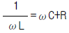
- 직류전원을 가할때
- ω L=ω C
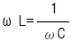
(정답률: 69%)
62. 부동작 시간(dead time) 요소의 전달함수는?
- K
- K/s
- Ke-Ls
- Ks
(정답률: 67%)
63. 그림과 같은 펄스의 라플라스 변환은 어느 것인가?
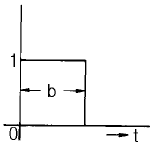
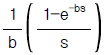
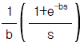
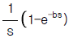
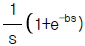
(정답률: 57%)
64. 대칭 3상 교류 발전기의 기본식 중 알맞게 표현된 것은? (단, V0는 영상분 전압, V1은 정상분 전압, V2은 역상분 전압이다.)
- V0=E0-Z0I0
- V1=-Z1I1
- V2=Z2I2
- V1=Ea-Z1I1
(정답률: 38%)
65. 정현파 교류의 실효값을 구하는 식이 잘못된 것은?
- 실효치=
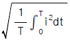
- 실효치=파고율×평균치
- 실효치=
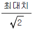
- 실효치=
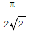
×평균치
(정답률: 55%)
66. 실효치가 12V인 정현파에 대하여 도면과 같은 회로에서 전 전류 I는?
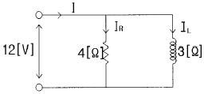
- 3 - j 4[A]
- 4 + j 3[A]
- 4 - j 3[A]
- 6 + j 10[A]
(정답률: 52%)
67. 정전용량계 C에 관한 설명으로 잘못된 것은?
- C의 단위에는 F, μF, pF 등이 사용된다.
- 정전용량의 역(逆)을 엘라스턴스(elastance)라고 한다.
- 엘라스턴스의 단위에는 Daraf가 사용된다.
- 정전용량계 C의 단자전압은 순간적으로 변화시킬 수 있다.
(정답률: 44%)
68. 기본파의 20[%]인 제3고조파와 30[%]인 제5고조파를 포함한 전류의 왜형율은?
- 0.5
- 0.36
- 0.33
- 0.26
(정답률: 55%)
69. 그림과 같은 회로의 영상전달 정수 θ 를 cosh-1로 표시하면?
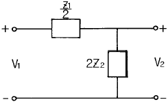
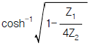
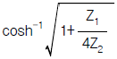
(정답률: 42%)
70. 그림에서 저항 2.6[Ω]에 흐르는 전류는 몇[A]인가?
- 0.2
- 0.4
- 0.6
- 1.0
(정답률: 28%)
71. 과도 현상은 회로의 시정수와 관계하는데 이를 바르게 설명한 것은?
- 시정수가 클수록 과도현상은 빨라진다.
- 시정수는 과도현상의 자속시간과는 무관하다.
- 시정수의 역이 클수록 과도현상은 서서히 없어진다.
- 회로의 시정수가 클수록 과도현상은 오래계속된다.
(정답률: 47%)
72. 3상 불평형 전압을 Va, Vb, Vc라고 할 때, 정상전압 V1은?
(정답률: 60%)
73. 그림과 같은 회로에서 전달함수 를 구하면? (단, )
(정답률: 28%)
74. 그림과 같은 회로에서 i1 = Im sin ω t일때, 개방된 2차 단자에 나타나는 유기기전력 e2 는 몇[V] 인가?
- ω MIm sin(ω t-90° )[V]
- ω MIm cos(ω t-90° )[V]
- -ω MIm cosω t [V]
- -ω MIm sinω t [V]
(정답률: 43%)
75. 저항 30[Ω], 용량성 리액턴스 40[Ω]의 병렬회로에 120[V]의 정현파 교번전압을 가할 때 전전류 [A]는?
- 3
- 4
- 5
- 6
(정답률: 38%)
76. 그림과 같은 회로에서 인가 전압에 의한 전류 i에 대한 출력 V0 의 전달 함수는?
- Cs
- 1+Cs
(정답률: 51%)
77. 2개의 교류 전압 v1=100 sin(377t + π/6)[v]와 v2=100 √2 sin(377t + π/3)[v]가 있다. 옳게 표시된 것은?
- v1과 v2의 주기는 모두 1/60[sec]이다.
- v1과 v2의 주파수는 377[Hz]이다.
- v1과 v2는 동상이다.
- v1과 v2의 실효값은 100[V], 100 √2 [V]이다
(정답률: 51%)
78. 무손실 분포정수 선로에서 인덕턴스가 1[μH/m]이고, 정전용량이 400[pF/m]일 때,특성 임피던스는 몇[Ω]인가?
- 25[Ω]
- 30[Ω]
- 40[Ω]
- 50[Ω]
(정답률: 46%)
79. 그림과 같은 4단자망에서 4단자 정수의 행렬은?
(정답률: 73%)
80. 그림과 같은 불평형 Y형 회로에 평형 3상 전압을 가할 경우 중성점의 전위는? (단, Y1, Y2, Y3는 각상의 어드미턴스이다)
(정답률: 62%)
5과목: 전기설비기술기준 및 판단 기준
81. 수용장소의 인입구 부근에 금속제 수도관로가 있는 경우 또는 대지간의 전기저항치가 몇 Ω 이하인 값을 유지하는 건물의 철골이 있는 경우에 이것을 접지극으로 사용하여 저압 전선로의 접지측 전선에 추가 접지할 수 있는가?
- 1
- 2
- 3
- 10
(정답률: 34%)
82. 도로에 시설하는 가공 직류 전차선로의 경간은 몇 m 이하로 하여야 하는가?(오류 신고가 접수된 문제입니다. 반드시 정답과 해설을 확인하시기 바랍니다.)
- 30
- 40
- 50
- 60
(정답률: 32%)
83. 저압 가공전선과 굴뚝 등의 금속제 부분이 굴뚝 등의 도괴에 의하여 접촉할 우려가 있을 경우에는 전선으로 케이블을 사용하여야 한다. 그러나 굴뚝 등에 제 몇 종 접지공사를 시행하면 그러하지 않아도 되는가?
- 제1종 접지공사
- 제2종 접지공사
- 제3종 접지공사
- 특별 제3종 접지공사
(정답률: 42%)
84. 사용전압 66kV 가공전선과 6kV 가공전선을 동일 지지물에 병가하는 경우, 특별고압 가공전선은 케이블인 경우를 제외하고는 단면적이 몇 ㎜2 인 경동연선 또는 이와 동등이상의 세기 및 굵기의 연선이어야 하는가?
- 22
- 38
- 55
- 100
(정답률: 57%)
85. 가공 전선로의 지지물에 취급자가 오르고 내리는데 사용하는 발판못 등은 지표상 몇 m 미만에 시설하여서는 아니 되는가?
- 1.2
- 1.8
- 2.2
- 2.5
(정답률: 68%)
86. 백열전등 또는 방전등에 전기를 공급하는 옥내 전로의 대지전압은 몇 V 이하를 원칙으로 하는가?
- 300
- 380
- 440
- 600
(정답률: 68%)
87. 통신선과 특별고압 가공전선사이의 이격거리는 몇 m 이상이어야 하는가? (단, 특별고압 가공전선로의 다중접지를 한 중성선을 제외한다.)
- 0.8
- 1
- 1.2
- 1.4
(정답률: 42%)
88. 합성수지관공사에서 관 상호간 및 박스와는 관을 삽입하는 깊이를 관의 바깥지름의 몇 배 이상으로 하고 또한 꽂 음접속에 의하여 견고하게 접속하여야 하는가? (단, 접착제를 사용하지 않은 경우임)
- 1.2
- 1.5
- 1.8
- 2
(정답률: 45%)
89. 저압 옥내간선에서 분기하여 전기사용기계기구에 이르는 저압 옥내전로로서 정격전류 30A인 과전류차단기로 보호되는 저압 옥내배선용 MI케이블의 굵기는 최소 몇 mm2 이상이어야 하는가?
- 1.0
- 1.5
- 2.5
- 6
(정답률: 27%)
90. 저압 또는 고압 가공 전선로의 지지물을 인가가 많이 연접된 장소에 시설할 때 빙설, 고온 및 저온계절을 구분하지 않고 적용할 수 있는 풍압하중은?
- 갑종풍압하중의 30%
- 병종풍압하중
- 을종풍압하중
- 을종풍압하중의 50%
(정답률: 57%)
91. 고압 옥내배선을 건조한 장소로서 전개된 장소에 한하여만 시설할 수 있는 배선공사는?
- 케이블공사
- 금속관공사
- 합성수지관공사
- 애자사용공사
(정답률: 46%)
92. 수상 전선로를 시설하는 경우 알맞은 것은?
- 사용전압이 고압인 경우에는 3종 캡타이어 케이블을 사용한다.
- 가공 전선로의 전선과 접속하는 경우, 접속점이 육상에 있는 경우에는 지표상 4m 이상의 높이로 지지물에 견고하고 붙인다.
- 가공 전선로의 전선과 접속하는 경우, 접속점이 수면상에 있는 경우 사용전압이 고압인 경우에는 수면상 5m 이상의 높이로 지지물에 견고하게 붙인다.
- 고압 수상 전선로에 지기가 생길 때를 대비하여 전로를 수동으로 차단하는 장치를 시설한다.
(정답률: 43%)
93. 가공 전선로의 지지물에 시설하는 지선에 관한 사항으로 옳은 것은?
- 지선의 안전률은 1.2 이상일 것
- 지선에 연선을 사용할 경우에는 소선은 3가닥 이상의 연선일 것
- 소선은 지름 1.2mm 이상인 금속선을 사용한 것일 것
- 허용 인장하중의 최저는 220kg으로 할 것
(정답률: 58%)
94. 사용전압이 22900V인 개폐소의 울타리, 담 등과 특별고압의 충전부분이 접근하는 경우에, 울타리, 담 등의 높이와 울타리, 담 등으로부터 충전부분까지의 거리의 합계는 몇 m 이상으로 하여야 하는가?
- 5
- 5.5
- 6
- 6.5
(정답률: 32%)
95. 고압 가공인입선이 케이블 이외의 것으로서 그 아래에 위험표시를 하였다면 전선의 지표상 높이는 몇 m 까지로 감할 수 있는가?
- 2.5
- 3.5
- 4.5
- 5.5
(정답률: 43%)
96. 특별고압 가공 전선로의 유도전류는 사용전압이 60000V이하인 경우에는 전화선로의 길이 12km마다 몇 ㎂를 넘지 않도록 시설해야 하는가?
- 1.5
- 2
- 2.5
- 3
(정답률: 52%)
97. 교통신호등회로의 사용전압은 몇 V 이하인가?
- 100
- 300
- 380
- 600
(정답률: 63%)
98. 라이팅 덕트공사에 의한 저압 옥내배선에서 덕트의 지지점간의 거리는 몇 m 이하로 하여야 하는가?
- 2
- 3
- 4
- 5
(정답률: 39%)
99. 전기 울타리의 시설에 관한 규정 중 옳지 않은 것은?(관련 규정 개정전 문제로 여기서는 기존 정답인 4번을 누르면 정답 처리됩니다. 자세한 내용은 해설을 참고하세요.)
- 전기 울타리는 사람이 쉽게 출입하지 아니하는 곳에 시설하여야 한다.
- 전선은 지름 2mm의 경동선 또는 이와 동등 이상의 세기 및 굵기이어야 한다.
- 전기 울타리용 전원장치에 전기를 공급하는 전로의 사용전압은 400V 미만이어야 한다.
- 전선과 수목사이의 이격거리는 50cm 이상이어야 한다.
(정답률: 61%)
100. 피뢰기를 시설하지 않아도 되는 곳은?
- 가공 전선로와 지중 전선로가 접속되는 곳으로서 피보호 기기가 보호범위내에 위치하는 경우
- 발전소, 변전소 또는 이에 준하는 장소의 가공전선인 입구
- 특별고압 가공 전선로로부터 공급받는 수용장소의 인 입구
- 특별고압 배전용 변압기의 특별고압측 및 고압측
(정답률: 43%)